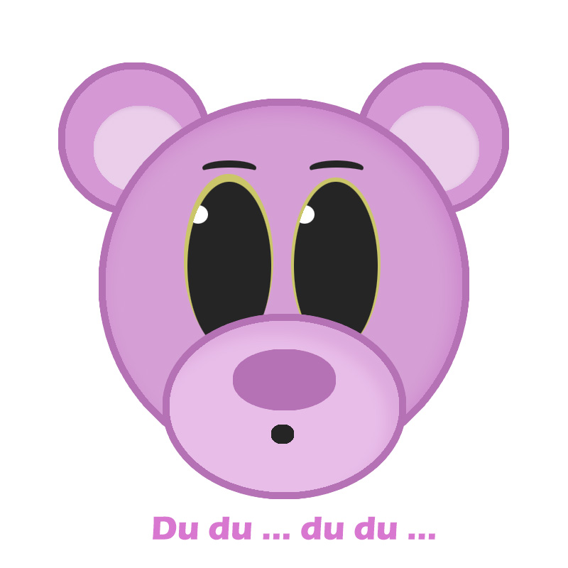
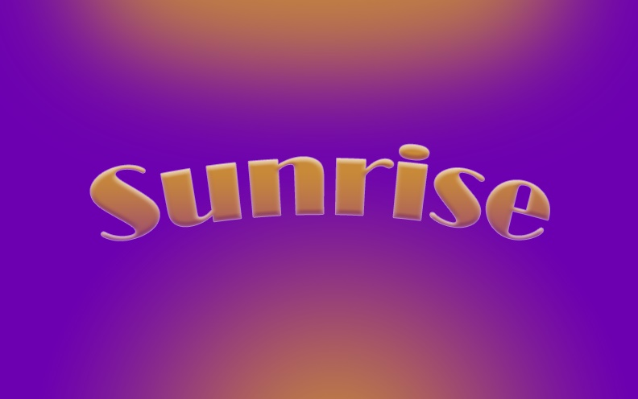
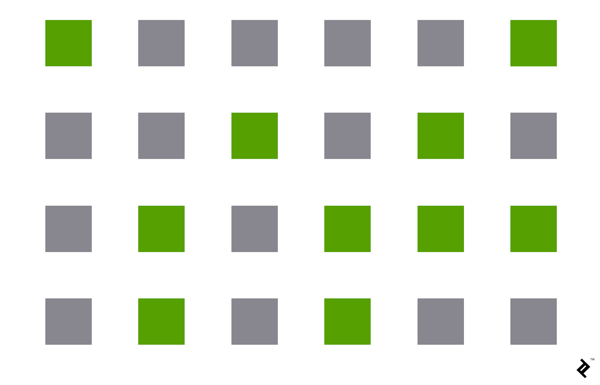
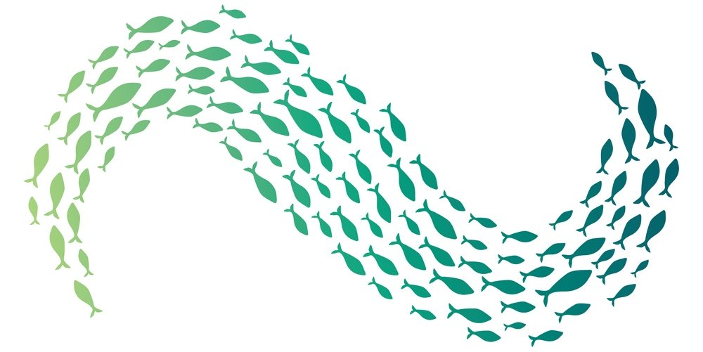
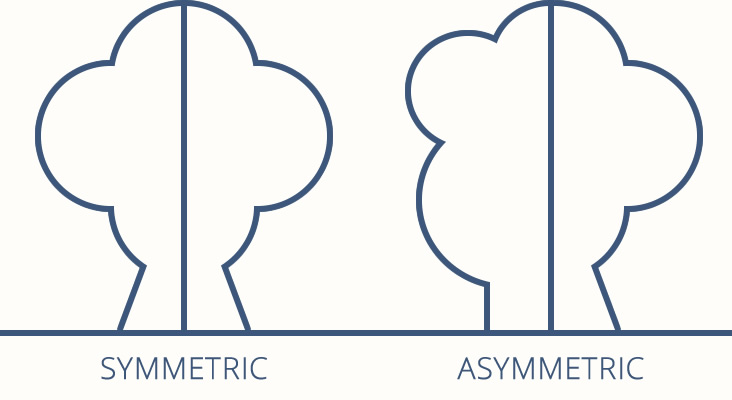
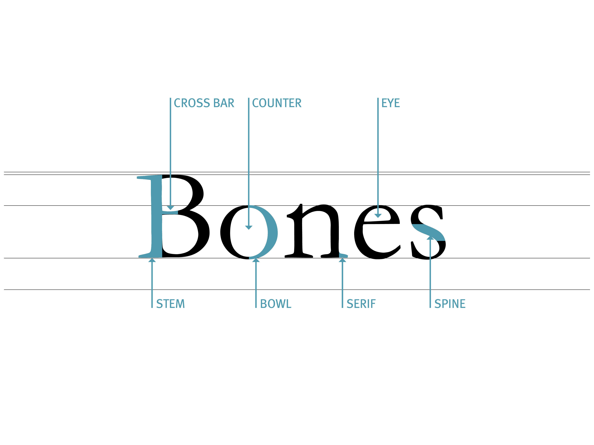

Design
Introduktion
Emnet design omhandler det mere æstetiske aspekt af det at være multimediedesigner. Det her der bliver leget med forskellige programmer til billeder, videoer og farver. Det er her de kreative evner kommer frem. Læs hvilke emner der bliver berørt, nedenunder:
Photoshop
Adobe Photoshop et digitalt billedbehandlingsprogram. Det bruges af både multimediedesigner, fotografer, designere og mange flere. Photoshop er et meget bredt program, og kan bruges til grafik, billeder, og illustrationer. Man kan benytte Photoshop på mange måder, men hovedsageligt i artboards og lag. Nogle af de mest anvendte tools er selections, shapes, gradient, layer mask og pen tool.
Eksempler:
 Illustrator
Illustrator er vektorgrafiksoftware, som betyder at det er er opløsningsuafhængig, og altså kan tilpasses uendeligt uden tab af kvalitet. Illustrator bruges bruges i hele verden af både grafiske designere og hobbister og er især et væsentligt program for multimediedesignere. Her arbejdes der med alverdens digitalt grafiske designs, såsom logoer.
I Illustrator arbejder man på en digital arbejdsflade, ligesom et papir, kaldet artboards. Her kan man arbejde i lag, som sørger for at man til hver en tid kan arbejde oveni, indeni og videre på sit design.
I undervisningen har vi arbejdet med at lave forskellige designs, med de samme tools, da man kan nå langt med blot få redskaber.
Fotografi
At fotografere handler om meget mere en bare at tage et billede med sin mobil eller et kamera man lige havde liggende. Som multimediedesigner er det væsentligt at kende til kameraets mange muligheder og funktioner, for at få det mest optimale resultat. Her er nogle væsentlige begreber:
ISO - kameraets lysfølsomhed, Jo højere (hurtigere) ISO, jo mere “støj” fra
sensoren ses i billedet
RAW - den ubearbejdede version af billedet, et JPEG er behandlet og komprimeret
Objektiv - en lang række linser, som angiver forskellige brændvidde
Blænde - kameraets dybdeskarphed, det bestemmer hvor meget lys der må komme gennem linsen, som resulterer i et fokus
Lukketid eksponering, hastigheden af hvor lang tid sensoren vil modtage lys.
Indstilling af kamera
Manuel (M) - Manuel indstilling af både blænde og lukkertid
Tidsforvalg (Tv) - Man indstiller lukkertiden, og kameraet beregner blænde
Blændeforvalg (Av) - Man indstiller blænde, og kameraet beregner Lukkertiden
Program (P) - Kameraet forsøger at balancere blænde og lukkertid
Colorbox
Når man ikke selv er i stand til at tage sine egne fotografier, er det en mulighed at benytte sig af andres. For at undgå at stjæle andres billeder, bare fordi de ligger ”frit” på internettet, kan man ved hjælp af colourbox købe licens, til deres store database af billeder og videoer. Man kan også betale for royaltyfrie billeder, hvor man derimod kun skal betale for en gang for ét billede, med en pris baseret på billedets størrelse. Det er et stærkt redskab for multimediedesignere og er blandt andet ideelt til at skabe moodboards med. På denne side er baggrundsbilledet, og billedet på forsiden fx fra colourbox.
Ophavsret og lincensering
Hvad er licensaftaler?
Indenfor licens taler man om en overdragelse af rettigheder. Disse rettigheder kan igennem en licensaftale, baseret på en liste af vilkår som skal overholdes, overdrages. Aftalen foregår mellem to parter, en licensgiver som vil overdrage rettigheder, og en licenstager (f.eks. en virksomhed) som vil modtage tilladelse til at benytte disse rettigheder. Disse rettigheder kan benyttes mod betaling til licensgiveren, omtalt som en licensafgift.
En licensaftale kan være eksklusiv eller ikke-eksklusiv. Den eksklusive licens bestemmer at licenstageren er den eneste som modtager rettighederne fra licensgiveren. Den ikke-eksklusive licens bestemmer derimod at licenstageren ikke har eneret til rettighederne og at licensgiveren frit kan udgive rettighederne. Licensaftalen kan også indeholde en hemmeligholdelsesaftale, som vil forekomme inden selve licensaftalen dannes. En hemmeligholdelsesaftale forsikrer licensgiveren mod plagiat, ved juridisk at skrive under på at forholde oplysninger i samarbejdet fortrolige.
Som multimediedesigner kan en licensaftale blive væsentlig, hvis man vil, eller har, oprettet egen virksomhed og har opfundet noget nyt som de kan have patent på, og ønsker at få på det marked Patent forudsiger at den pågældende opfinder har eneret til opfindelsen. At danne en licensaftale med en virksomhed kan hjælpe med at få skabt opfindelsen til virkelighed, hvis den opfindende multimediedesigner ikke selv har de omspændende ressourcer
Hvad er ophavsret?
Ophavsret handler om at beskytte værker imod ulovlig brug eller kopiering baseret på reglerne fra ophavsretsloven. Ophavsret er også kendt under det engelske navn Copyright og genkendt med det runde logo med et c i midten. Disse regler sørger for at beskytte værker, medier, bøger, kunst, software mm. Det vil sige at ophavsretten kun kan beskytte værker i en form – det er ikke muligt kun at understøtte en idé. Ophavsretten giver skaberen af værket eneret til at producere værket, men for andre er det dog stadig tilladt at citere og kopiere privat, så længe skaberen får kredit. Ophavsretten har dog ikke et reelt register. Der findes ingen ansøgning for at få ophavsret på et værk. Det sker automatisk af når skaberen har skabt et nyt værk og vil gøre krav på det. Dog kan der være tale om et originalitetskrav, som forudsætter at skaberen har skabt værket selv og at det er nogenlunde originalt. Som multimediedesignere er ophavsret en form for benspænd. Ophavsret findes i alt vi skal benytte os af og modificere, hvis ikke det er originale værker. Det er alt lige fra videoklip, billeder til skrifttyper.
Video
Under video arbejder man med et kamera og et emne som skal berøres. I en videoproduktion handler det om at finde den bedste måde at formidle det budskab i en video, altså et kommunikationsværktøj. Produktionen foregår i følgende faser:
Pre-production
Produktion starter med en pre-produktion, hvor der skal tages stilling til ting som mål, formål, målgruppe, genre og udarbejdes en synopsis og et storyboard. Her skal der tages beslutninger og planlægges inden man stiller sig foran kameraet. Det gælder om at blive enige og fastlagte.
Production
Efterfølgende starter produktionen, hvor kameraet kommer i brug. Her begynder man at filme de ting man aftale i den foregående fase. Man finder sin location, tager højde for godt lys og lyd og begynder ellers at filme shot-by-shot. Hvis der filmes på en smartphone, er det især vigtigt at tage højde for hvilket medie der filmes til! Filmes der en reklame, som skal ligges på YouTube er det bedst at placere mobilen i en liggende stilling, i forhold til hvis det var en Facebook-reklame, hvor en stående stilling måske kunne overvejes i stedet.
Post-production
Som det sidste ender man i post-produktionen, hvor det siddende arbejde sker. Det er i denne faser man ser dine klip igennem og redigerer dem til den fulde video i et redigeringsprogram. I Quick and Dirty undervisningen blev programmet Adobe Spark brugt. Til hverdag findes der andre kendte regeringsprogrammer såsom Final Cut Pro eller iMovie for Mac-brugere.
Imens bliver der klippet til og fri, måske tilføjet musik, effekter, tekst eller voice over, inden videoen skal eksporteres.
Gestaltlove
Gestaltlovene handler om at se helheder. Disse ”love” hjælper med at skabe designs som er genkendeligt og brugervenligt for alle, da de betegner noget, som alle fælles kan genkende og se mening i.
"The whole is greater than the sum of its parts"
For det designmæssige perspektiv findes der syv love som især er væsentlige i et design af et website:
Nærhed (Proximity)
Kontinuitet (Continuity)
Lighed (Similarity)
Common fate
Figure Ground
Symmetry
Closure
Proximity
Proximity handler om nærhed. Nærheden bestemmer hvor tæt elementer er på hinanden. Det kan handle om at gruppere elementer sammen, men også om det modsatte, hvor der skabes luft mellem elementer for at adskille dem.
I design bruges nærhed ofte for at få brugere til at gruppere visse ting sammen uden nogle visuelle rammer. Med proximity loven kan brugeren selv danne en organisation og struktur.
Continuity
Omhandler fortsættelse. Objekter arrangeret på linie eller kurver, opfattes som relaterede i højere grad end hvis de ikke er. I et website ville det typisk være en brødkrummesti, som viser hvor man er kommet fra og hvor man er nu, paragraffer eller grafer. Det handler i helhed om at kommunikerer relation.

Similarity
Visuelle elementer som er ens i form, størrelse, farve og retning opfattes som del af en gruppe. Farver er den stærkeste måde at skabe lighed på. Det kan benyttes til at skabe relationer i elementer som links og navigation for websitets hierarki. Gennemført styling og content er vigtigt og antyder struktur.
Figure-ground
Omhandler måden hjernen behandler negativt rum på. Hjernen vil skelne mellem objekterne i forgrunden (figuren eller fokuspunktet) og baggrunden (det område, som figurerne hviler på). Det kan også ske at forgrunden og baggrunden faktisk indeholder to forskellige billeder. For en multimediedesigner kan denne lov være med at til at skabe interessante logoer, eller effekter for et moderne website

Common fate
Kan oversættes til fælles skæbne. Denne lov kan vise sig meget brugbar for brugervenlige websites. Dette princip handler om, at brugerne vil gruppere ting, der peger på eller bevæger sig i samme retning. Det kan være en masse individuelle elementer, som bevæger sig som en og derved blever grupperet i hjernen dem bliver betragter dem som en enkelt enhed. Lidt ligesom en flok fugle eller stimefisk.
Symmetry
Kaldes også prägnanz. Denne lov handler om symmetri og orden, da hjernen opdater tvetydige former. Symmetri i sig selv er en figur af to dele, som er hinandens spejlbilleder.
Closure
Closure leger med idéen om at hjernen udfylder manglende dele af et design eller billede for at skabe en helhed. Eksempelvis ses der i billedet herunder en fodbold. Men i virkeligheden er det egenligt blot fem svævende pentagoner på en hvid baggrund – men givet at en fodbold netop er sort og hvid og pentagonerne er placeret så nøjagtigt, forbinder hjernen det med fodboldens form.
Typografi
Typografi handler om selve skriften i designet – det er alt fra skriftstørrelse, skriftype og alt der måtte være imellem. Skriften kan i virkeligheden være alt afgørende for designets færdige look, da hver skrift har forskellige associationer.
Typografiske begreber
Minuskler - Små bogstaver
Majuskler - Store bogstaver
X-height - Højden på minuskel fra bunden til top
Leading - Linieafstand
Kerning - Afstanden mellem hvert enkelt bogstav
Tracking - Justering af afstanden mellem alle bogstaver i et ord
Weights - Udseendet af en font, eksempelvis Regular, Italic eller Bold
Typeface - Samlingen af font-weights
Font - Navnet på den bestemte font, såsom Arial Bold
Fontfamilie - Stammen af skriftens navn, som Arial
Serif - Antikva, en font med ”fødder”
Sans Serif - Grotesk, betyder “uden fødder”, som også netop er udseendet på det
I undervisningen lavede vi en bog for Typografiens Historie, som kan ses samlet her:
https://eadania.mrooms.net/mod/book/view.php?id=76066
Farver
Farver er noget af det første øjet gennemskuer ved et design. Farver kan være behagelige for brugeren eller komplet uforstyrrede – derfor er det vigtigt at vide noget om hvilken effekt de har, hvornår man skal brug dem, og deres opbygning.
Farvehjulet
Farvehjulet er dannet på baggrund af Isaac Newtons konklusioner fra farver gennem en prisme. Nok er Isaac Newton kendt som et geni, men derfor er dette farvesystem ikke absolut, men bygger på forskellige teoretiske opfattelser og kan veksle med forskellige kulturers farvesyn – alle mennesker er forskellige. Farvehjulpet består af følgende:
Primære farver - De ”rene” farver, blå, gul og rød. Disse kan ikke blandes af andre farver.
Sekundære farver - De farver som kan blandes af to primære farver, som grøn, orange og lilla.
Tertiære farver - Farver blandet af en primær og en sekundær farve, som turkis.
Farverum
Et farverum definerer et farveinterval i det synlige spektrum.
RGB - Red Green Blue, additivt farvesystem hvor lys tilføjes. Dette benyttes på computere og tv.
CMYK - Cyan Magenta Yellow Key, subtraktivt farvesystem, lyset trækkes ud. Benyttes til tryk, eksempelvis I printere.
Hue - En graduering eller variation af en farve
Saturation - En kulør blandes med forskellige mængder af gråtone
Brightness - En kulør blandes med ren sort eller hvid
Farvesammensætning
I et design er det vigtigt at vide hvordan man sætter farver sammen for at komplimentere hinanden. I et webdesign har man ofte valgt en farvepalette, med en grundfarve og en accentfarve, for at skabte struktur og opmærksomhed hvor der er brug for det. De seks mest anvendte måder er:
Monokrom - Én kulør i flere nuancer
Analog - Én kulør i bredere lyshed og mætning
Komplementær - To farver der ligger overfor hinanden i farvecirklen
<
Split komplementær - To farver overfor hinanden, med bredere farvespektrum
Triader - Tre farver ligeligt adskilt i farvecirklen
Tretriader - Fire komplementære farver
Farvebetydning
Som nævnt med Newton, er der mange måder at opfatter farver på. Ikke alle oplever farver på samme måder, da alt dette blot er teori og noget vi er blevet enige om. Dog er der nogle kendte tendenser, som at rødt enten er romantisk eller farligt, gult kan være en blomst eller et faretegn. På billedet herunder er der også en antagelse af at forskellige smag har forskellige farver, den røde er salt, orange er paprika og grøn er sour cream and onion. Det ses hos mange chips-varianter og er blot en farvesymbolik vi er blevet enige om. I virkeligheden er rød jo bare rød og grøn bare grøn.

Kilder
• Carsten Bogner - Design: Farver
• Carsten Bogner - Design: Gestaltlovene · Illustrator
• Carsten Bogner - Design: Typografi · Typografiens historie
• Carsten Bogner - Illustrator: grundlæggende
• Carsten Bogner - Peer-to-peer: Photoshop · Illustrator
• Carsten Bogner - Photoshop: grundlæggende
• Carsten Bogner - Quick'n Dirty Video
• Chapman, Cameron, “Exploring the Gestalt Principles of Design”, besøgt den 23 december 2019 - https://www.toptal.com/designers/ui/gestalt-principles-of-design
• Mette Nørgaard – Aflevering, Ophavsret og licencer
• Niels Østergaard - Introduktion til fotografering
• Rold, M. (2019) “Interfacedesign”, Samfundslitteratur - kapitel 16 & 17
Reflektion
Design var et emne jeg havde glædet mig meget til det få fingrene i. Jeg har altid været glad for at dykke ned i billedredigering og farvesammensætning, men det havde altid været på præference og intuition, så det har kun glædet mig at få teori oven på det. Samtidig havde jeg også glædet mig til at benytte programmer såsom photoshop for første gang, selvom det har ærgret mig lidt at undervisningen i det var nødt til at være så kort. Videoproduktion var også noget jeg aldrig selv havde forsøgt mig på, men jeg har været nysgerrig på videoredigering og klipning længe. Den egentlige undervisning var jeg nødt til at misse, til min store utilfredshed, så jeg ser frem til at dykke endnu mere ned i det til de forekommende semestre.